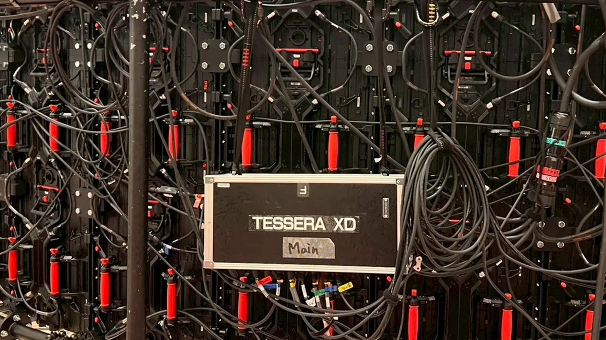

32 × 3円周32枚 × 高さ3段
96枚ROE Ruby のLEDパネル
6名設営から撤去まで
THE STORY
この現場で、何をしたか。
どんな現場か
ホテルの宴会場。トラスに、円筒形のLED画面を組みました。設営から本番、撤去まで3日間の現場です。
求められたこと
平らな壁ではなく、輪になった画面。1枚ずつ角度をつけて円周をつなぎ、最後の1枚で輪をぴたりと閉じる必要がありました。
LOTUS VISUAL の持ち場
6名で円形LEDを設営。リングを閉じるときは、最後のパネルの角度を調整しました。最終日はリハーサル・本番・撤去まで、同じ6名で入りました。
この仕事の勘所
円は、少しのずれが最後の1枚に集まります。1枚目から角度をそろえて進め、閉じる前に隙間を測る。背面の配線も円に沿ってまとめると、点灯の確認と撤去が早くなります。

01 / 画面の構成
円周32枚、高さ3段の円筒形。
現場の条件
宴会場のトラスに、ROE Ruby を円周方向に32枚・高さ方向に3段。円筒形のスクリーンです。
- ROE Ruby 96枚
- Brompton Tessera XD
03 / YOUR NEXT SHOW
次の現場を、
一緒に具体化する。
すべてが決まっていなくても大丈夫です。
分かっていることから、お聞かせください。
相談のときに分かるとよいこと
会場・日程・画面の形と大きさ・吊りか自立か・担当してほしい工程をお知らせください。
この役割をLOTUS VISUALに相談する↗この事例名を引き継いで、内容を整理できます。